Learning objectives
Understanding the procedure to find the general solution of the TDSE
Understanding the difference between bound and scattering states
Calculating the eigenfunctions of the TISE for different potentials in 1D, i.e. infinite well, square well, delta well, harmonic well
Executing calculations of expectations values of operators on eigenstates and their combinations, for different potentials
Familiarising yourself with the Dirac (bra-ket) notation
4.1 Solving a general problem with the TDSE
In this Chapter we will focus on solving the Schrödinger equation for different kinds of potential, in one dimension. Let’s recap some of the things we’ve seen in the previous chapter.
The general problem that we will encounter in this course is the following: given a time-independent potential \(U(x)\) and the initial wavefunction \(\Psi(x,0)\), find the wavefunction \(\Psi(x,t)\) at any following time.
The strategy for this kind of problem is the following:
Solve the time-independent Schrödinger equation (Equation 3.23) to find the eigenstates \(\psi_n(x)\) and eigenvalues \(E_n(x)\);
With the eigenstates, “reproduce” \(\Psi(x,0)\) using the superposition principle, i.e.
\[ \Psi(x,0)=\sum_{n=1}^{\infty} c_n\psi_n(x), \]
with the appropriate amplitudes \(c_n\).
- Build the stationary states from the eigenstates and eigenvalues found at the first step \[ \Psi_n(x,t) = \psi_n(x)e^{-iE_nt/\hbar}, \]
and use the superposition principle to find the general time-dependent Schrödinger equation (Equation 3.38), i.e. \[ \Psi(x,t) = \sum_{n=1}^{\infty} c_n \psi_n(x)e^{-iE_nt/\hbar}=\sum_{n=1}^{\infty} c_n \Psi_n(x,t). \]
In the rest of this course we will focus on the first two points, i.e. how to solve time-independent Schrödinger equations, as unfortunately we do not have enough time to deal with time evolution (ironically the structure of the course is time-dependent… *ba-dum-ts*).
4.2 Solving the TISE
Before going ahead and solving the 1D TISE with different potentials, let’s see what are the conditions we need to impose to have physical solutions and what their characteristics are, both for the eigenfunctions and energy eigenvalues.
4.2.1 Properties of the eigenfunctions
Let’s rewrite the 1D TISE (Equation 3.23):
\[ -\frac{\hbar^2}{2m}\frac{d^2\psi}{dx^2}+U(x)\psi(x)=E\psi(x)\implies \frac{d^2\psi}{dx^2}=-\frac{2m}{\hbar^2}[E-U(x)]\psi(x). \tag{4.1}\]
From the RHS of the last equation we can make some observation based on the sign of \(E-U(x)\) and its effect on the curvature of the wavefunction (since the sign of the second derivative defines whether a function is concave or convex):
- \(E-U(x)>0 \implies E>U(x)\) - classically allowed region; the wavefunction solution of the SE bends toward the \(x\) axis; wavelike solutions
- \(E-U(x)<0 \implies E<U(x)\) - classically forbidden region; the solution of the SE curves away from the \(x\) axis; exponential solutions
- \(E=U(x)\) - turning points.
When solving the SE for any given potential, remember the following conditions for the wavefunctions, that we’ve been stressing in the previous chapters:
- single-valued (i.e. for each value of \(x\) (and \(t\)) there is only one corresponding value of \(\Psi\))
- continuous (i.e. you could “draw” it without lifting your pen from the paper)
- smooth except at infinite-sized potential steps (i.e. no sudden changes in the derivative - continuous first derivatives if there are no singularities in the potential)
On top of these, impose the normalization condition.
In the following of this chapter we will apply these fundamental rules to the SEs for different (easy - and useful) potentials.
4.2.2 Properties of the eigenenergies - Bound states and scattering states
The set of values of the total energy, \(E\), for which the TISE has physically admissible solutions, determines the energy spectrum.
The Schrödinger equation has two kind of solutions: bound states and scattering states. Their definition in quantum physics is a bit more “relaxed” from the one in classical physics, due to the effect of tunneling through any finite potential barrier, which we will see later.
In classical physics, bound states and scattering states are defined comparing the total energy to the potential energy in an interval: if there are turning points (\(E=U(x)\) for some \(x\) - the kinetic energy is \(0\)), then the system is in a bound state in the interval between turning points; otherwise it is in a scattering state (see Figure 4.1).
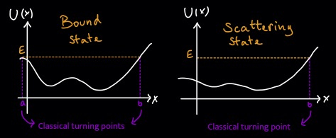
The definition of bound states in quantum physics is a bit more “relaxed” from the one in classical physics, due to the effect of tunneling through any finite potential barrier, which we will discuss later. Overall we have a similar condition as for classical bound states but, instead of using the turning points, we compare the total energy with the potential \(U(+\infty)\) and \(U(-\infty)\).
Bound states
Bound states satisfy the condition: \(E<U_{\pm\infty}\)
- Classically they cannot “escape” to infinity, and even with quantum relaxation of that rule (as we shall see), the probability density will be localised at least close to the classically allowed \(E > U\) part of the potential.
- The energies of bound states are quantised (or discrete).
- The lowest discrete energy level is called the ground-state energy of the system, and all the higher discrete energy levels are called excited states.
- The eigenfunctions of bound states vanish for \(\mathbf{r}\to\infty\).
- The number of bound state is finite (including \(0\)) or infinite, depending on the form of the potential \(U\).
Furthermore, bound states are real valued function (with global phases), so their probability flux \(\mathbf{J}\propto \psi^*\nabla \psi'^ -\psi\nabla\psi^*\) must be zero.
Scattering (or unbound) states
Scattering (or unbound) states are obtained if: \(E>U_{\pm\infty}\).
- The energies of unbound states are such that the particle would be also classically unbound
- The energies of scattering states are continuous and can extend to \(E=+\infty\)
- Since the energies form a continuum, there is no energy quantisation for scattering states
- The eigenfunctions of unbound states are finite for \(\mathbf{r}\to\infty\).
Figure 4.2 represents an example of potential with both bound and unbound states.
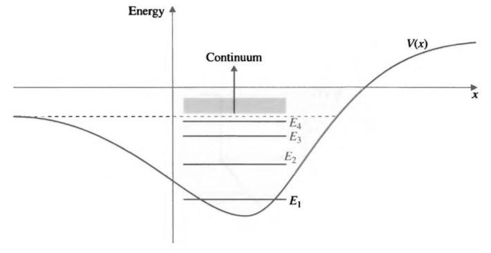
Now that we know what to expect to find for the energy eigenvalues and eigenfunctions in the solution of the TISE, let’s go ahead and solve this for some potentials in one dimension.
In the following of this chapter we will be looking at bound state solutions for one-dimensional potential wells.
Well, well, well…
4.3 The infinite well potential (particle in a box)
The potential for the infinite potential well has the following form:
\[ V= \begin{cases} 0\quad \text{for} \quad -a\leq x\leq a, \\ \infty \quad \text{elsewhere}, \end{cases} \tag{4.2}\]
represented in Figure 4.3.
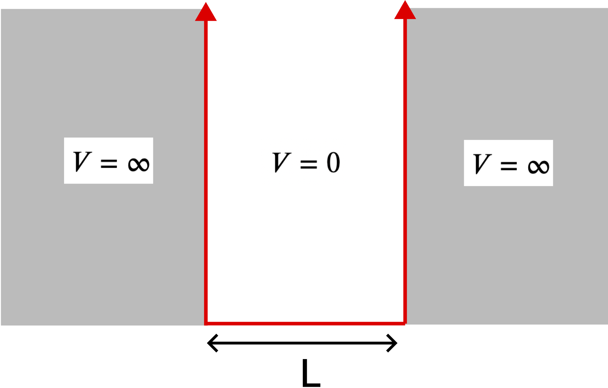
Outside the potential well the probability of finding the particle is zero, hence \(\psi(x)=0\) for \(x<-a, x>a\).
This means that inside the well, the particle behaves like a free particle, since in Equation 3.23 the potential \(U(x)\) is zero in the range \([-a,a]\):
\[ -\frac{\hbar^2}{2m}\frac{d^2\psi(x)}{dx^2}=E\psi(x). \]
We can rewrite this in the form \[ \frac{d^2\psi(x)}{dx^2}=-k^2\psi(x), \tag{4.3}\] where we defined \(k=\sqrt{2mE}/\hbar\), implicitly imposing \(E>0\).
Since the potential is flat within the well, we can show that plane waves (of any \(k\)) are good solutions to the Schrödinger’s equation.
We could write these as a continuous spectrum of waves of given positive \(k\), \[ \psi_k(x)=a_xe^{ikx}+b_ke^{-ikx}, \]
but we can just expand this and reparametrise it in terms of \(\cos(kx)\) for \(a_k=b_k\) and \(\sin(kx)\) for \(a_k=-b_k\), for convenience, given the boundaries of the potential.
So the easiest solution to the differential equation of Equation 4.3 is \[ \psi_k(x) = A_k\cos(kx)+B_k\sin(kx). \tag{4.4}\]
What next? We need to consider the boundary conditions of the function.
We know that the wavefunction must be continuous and we know that outside the well it is zero, so we need to impose that at the boundaries \(x=-a\) and \(x=+a\) the wavefunction must also be zero: \[ \psi(\pm a)=0. \tag{4.5}\]
From Equation 4.4, using the symmetry of the functions \[ \begin{cases} \psi_k(-a)=A_k\cos(-ka)+B_k\sin(-ka)=0 \implies A_k\cos(ka)-B_k\sin(ka)\\ \psi_k(a)=A_k\cos(ka)+B_k\sin(ka)=0, \end{cases} \tag{4.6}\]
solving this system we obtain \[ \begin{aligned} A_k\cos(ak)&=0\implies k=\frac{n\pi}{2a}, \quad \mathrm{for}\,\, n=1,3,5...\\ B_k\sin(ak)&=0\implies k=\frac{n\pi}{2a}, \quad \mathrm{for} \,\, n=2,4,6...\\ \end{aligned} \]
So replacing these values of \(k\) in the wavefunctions of Equation 4.6, we obtain even/odd pairs of eigenfunctions \(\psi_n(x)\), which we define using the notation below: \[ \psi_n(x)= \begin{cases} u(x)^+_n=A\cos\frac{n\pi x}{2a} \quad \mathrm{for}\,\, n=1,3,5... \\ u(x)^-_n=B\sin\frac{n\pi x}{2a} \quad \mathrm{for}\,\, n=2,4,6... \end{cases} \tag{4.7}\]
Note that now we have a discrete set of even and odd states! But wait, for the free particle we have a continuum of energy levels (unbound state), so what is different here, if we are assuming that within the well the particle can be considered a free particle, after all? The difference is… the boundaries! The lost of the continuous \(k\) spectrum and appearance of a discrete spectrum is due to the fact that we are in fact imposing that at the boundaries, and outside those, the wavefunction is zero!
This has another consequence: remember when we said that the free particle represented as a plane wave had a big normalization problem because fully delocalised? Well, it looks like we do not have a fully delocalised particle after all, because we put infinite walls so we cheated the system, and now we can actually impose the normalization condition to find the constants \(A\) and \(B\) in Equation 4.7, by imposing \(\int_{-\infty}^{\infty} \psi_n(x)dx=\int_{-a}^a\psi_n(x)dx=1\).
For odd \(n\): \[ \int_{-a}^a dx u(x)_n^+=\int_{-a}^a A^2\cos(n\pi x/2a) dx =A^2 a [1+\sin(n\pi)/(n\pi)] = 1 \implies A=1/\sqrt{a}. \]
For even \(n\): \[ \int_{-a}^a dx u(x)_n^-=\int_{-a}^a B^2\sin(n\pi x/2a) dx =A^2 a [1-\sin(n\pi)/(n\pi)] = 1 \implies B=1/\sqrt{a}. \]
Therefore the normalised eigenstates of the infinite well potential are as follows.
The eigenvalues of the energy, below, are derived from \(E_k = \frac{\hbar^2k^2}{2m}\), with \(k=\frac{n\pi}{2a}\).
The existence of the zero-point energy is due to the fact that in this case the particle can’t be fully delocalised as for the free particle case, because the wavefunction can’t extend over the boundaries, so the momentum must have some uncertainty and can’t be exactly zero.
But hang on, where did this “\(\psi=0\) if \(U = \infty\)” rule come from? We will get a proper answer when we come to the delta-function well, but in short it is because of the infinite “energy penalty” on the particle should it penetrate the wall: the wavefunction will be forced to look like a decaying exponential with decay length ∼ 1/V = 0. In the following section we will set up the potentials differently, so the energy penalty (actually V − E) and hence the amplitude decay length are finite.
Notice also that the eigenenergies are proportional to \(n^2\), so they are not equally spaced: their distance increases with \(n\).
A representation of the eigenstates and eigenenergies is shown in Figure 4.4.
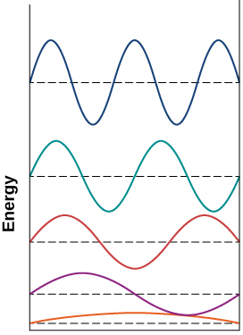
In the form we’re using, with \(x = 0\) at the centre of the well, the solutions alternate between \(cos(nπx/2a)\) and \(sin(nπx/2a)\) functions, with \(cos(πx/2a)\) as the even-symmetric ground state. That ground state wavefunctions have no zero-crossings (the \(x = \pm a\) endpoints do not count) is a general feature of energy eigenstates, with each excited state adding one crossing.
We could have defined the wavefunction in the interval \([0,L]\) instead of \([-a,a]\). Note that in that case we would start with the same solution Equation 4.4, but the eigenstates would be different and have only “sine” terms, due to the different boundary conditions determining different values of \(A\) and \(B\)! The reason why we defined these boundaries here is to use the symmetry property around the center of the well (we’ll discuss this a bit further in the section on “parity”.)
4.3.1 Properties of infinite-square-well potential eigenfunctions
- Normalization (we demonstrated this to derive \(A, B\)): \(\int_{-\infty}^\infty dx u(x)_n^{\pm *} u(x)_n^{\pm } = 1\)
- Orthogonality: \(\int_{-\infty}^\infty dx u(x)_n^{\pm *} u(x)_m^{\mp } = 0; \, \int_{-\infty}^\infty dx u(x)_n^{\pm *} u(x)_m^{\pm } = \delta_{mn}\)
- Eigenstates of \(\hat{H}, \hat{p}^2\), but not e.g. \(\hat{p},\hat{x}\)
- Expectation values: \(\langle x \rangle = 0, \langle p \rangle = 0, \langle p^2\rangle = 2mE_n^{\pm}.\)
Note that because of the orthogonality property there is no overlap between eigenstates, but there can be overlap between linear combinations of them. Changing \(|a|\) will generally mix the eigenstates!
4.3.1.1 Exercise
Demonstrate the properties at points 3. and 4. above.
Hint 1
Useful relations:
\[ \begin{aligned} &\sin^2(A) + \cos^2(A) = 1\\ &\sin^2(A) = \tfrac{1}{2} [1 - \cos(2A)] \\ &\cos^2(A) = \tfrac{1}{2} [1 + \cos(2A)]\\ &\cos(A \pm B) = \cos(A)\cos(B) \mp \sin(A)\sin(B)\\ &\sin(A \pm B) = \sin(A)\cos(B) \pm \cos(A)\sin(B)\\ % \color{gray} \to \text{use}~\cos(A+B) \pm \cos(A-B),~\text{and}~\sin(A+B) \pm \sin(A-B) \end{aligned} \]Hint 2
Use \(\cos(A+B) \pm \cos(A-B), ~\text{and}~\sin(A+B) \pm \sin(A-B)\).Solution
– No solution added (yet) –A good exercise is to show that the stationary states do not have definite momentum or position, by application of the \(\hat{p}\) and \(\hat{x}\) operators: you can easily show that their expectation values are zero, consistent with the symmetry of the well. It may seem strange to not be in a definite-momentum state, especially since the Hamiltonian within the well contains only the kinetic energy term, \(\hat{p}^2/2m\), which commutes with \(\hat{p}\): this is because the sinusoidal solutions always contain equal amounts of positive and negative x, i.e. right-going and left-going momenta at the same time. They do, however, have non-zero \(\langle x^2 \rangle\) and \(\langle p^2 \rangle\) expectations.
As stationary states are eigenstates (of the Hamiltonian), they form an orthonormal basis (check this!) from which arbitrary states can be constructed by superposing different stationary states with different mixturers of (complex) coefficients (check again the interactive material of Section 3.6) — subject to the overall probability-normalisation \(\int |\psi|^2dx = 1\) requirement, of course.
The overlap coefficients can be extracted via the \(c_n = \int\psi^*\phi_n dx\) overlap integrals as usual, and the probabilities of a measurement collapsing into any particular eigenstate given by the mod-square of its coefficient, \(P(n) = |c_n|^2\).
It is interesting to note that this (as do all such syntheses from stationary basis states) leads to wavefunctions of indefinite energy: this feels strange, and perhaps at odds with energy conservation, although we would find that that rule resumes nicely if we compute expected energy. This is a hint that a complete picture of relativistic energy and momentum conservation in QM is a bit more complex than we are ready to deal with!
4.3.2 Parity
Parity, i.e. the reflection symmetry \(x\to -x\) is an useful symmetry, and by choosing to place the zero coordinate along \(x\) in the middle of the potential well, we obtained wavefunctions that respect the same symmetry, being even-symmetric under the parity transformation \(x\to -x\).
The stationary states are also eigenstates of the parity operator \(\hat{P}\), i.e. \(\hat{P}\psi(x)=\psi(-x)=\pm 1\) (it has only two possible eigenvalues).
The spatial eigenstates \(u^\pm_n(x)\) have definite parity, and we can see that by applying the parity operator \(\hat{P}\) on them \[ \hat{P} u^+_n(x) = u^+_n(x); \qquad \hat{P} u^-_n(x) = -u^-_n(x) \tag{4.10}\]
The eigenstate alternate between parity \(+1\) for the \(\cos\) solutions, and parity \(−1\) for the \(\sin\) ones. Potentials with odd or indefinite symmetry, however, don’t have to have solutions of definite parity at all (and odd potentials can’t have bound states!)
The goodness of the parity quantum number is directly related to the definite parity of the potential, \(U(x) = U(-x)\). An asymmetric potential, \(U(x) \neq U(-x)\), will not have eigenstates of definite parity.
This is why earlier we justified this choice for defining the potential in the interval \([-a,a]\) instead of \([0,L]\).
You need to be careful about coordinates: a well in \([0 \ldots L]\) has only “sine” solutions, and \(-x\) is no longer useful, but the real symmetry is still there. Parity is defined about a coordinate origin: you need to choose an appropriate one.
4.4 The delta-function potential
What happens if we make the infinite well potential infinitely narrow, i.e. for \(L\to 0\)?
We obtain a delta well potential!
The infinite square well showed us a system where the wavefunction is non-trivial only in the classically allowed region with \(E > U\), and we saw that it was a wave-like sinusoid in that region.
Let’s change the “reference” zero potential (without loss of generality) so that \(U=0\) everywhere except at \(x = 0\) where we place a negative delta-function well \(U(x)=C- \alpha \delta(x)\). Without loss of generality, we can set \(C=0\), so
\[ U(x) = \begin{cases} - \alpha \delta(x) \quad \mathrm{at} ~x=0\\ 0 \quad \mathrm{otherwise}, \end{cases} \]
where \(\alpha\) is a positive constant determining its “strength”.
The delta-function potential is a neat way to show the behaviour of the complementary classically-disallowed region where \(E < U\). We can then put both solution types together to build composite wavefunctions for potentials and with both allowed and finitely-disallowed regions in \(x\).
The particle energy for a bound state has to be \(E < 0\), so we expect to see it localised somewhere around the needle-like potential at \(x=0\). But there is no space for a non-trivial wavefunction within the well, and the particle kinetic energy is only the finite amount \(E\) short of being enough to escape the well, so this time we find a non-trivial wavefunction outside the well only.
Let’s solve the TISE. For \(x\neq 0\), \(U(x)=0\), so the TISE is
\[ \frac{d^2\psi}{d{x}^2} = - \frac{2mE}{\hbar^2} \psi \equiv \kappa^2 \psi \tag{4.11}\]
for \(\kappa = \sqrt{-2mE}/\hbar\).
Why did we define this constant?
The same argument as for using plane wave solutions within the infinite well applies to the flat \(U = 0\) potential, but this time with a relative minus sign on the “spare energy” \(E − U\). We are looking at bound states first, so \(E<0\) and \(\kappa\) is real and positive. Were we to approach this naively to find the solution, we could assume the usual \(e^{ikx}\) form, compute that \(k = \sqrt{2mE}/\hbar = i\sqrt{2m|E|}/\hbar\) , and let the \(i\) factors cancel to turn the complex exponential into a real exponential \(e^{\pm |k|x}\); being a little smarter we can anticipate this already and instead define the exponential constant as \(\kappa = \sqrt{2m|E|}/\hbar\).
For real \(\kappa\), i.e. \(E<0\), the general solution of Equation 4.11 is \[ \psi(x)=A_-e^{-\kappa x}+B_-e^{\kappa x}, \]
but for \(x\leq 0\) the first term blows up, so \(A_-=0\) for \(x\leq 0\) and \[ \psi(x)=B_-e^{\kappa x}. \tag{4.12}\]
Vice versa, for \(x\geq 0\) the second term of the general solution must be \(0\), so in that case we will have \[ \psi(x)=A_+e^{-\kappa x}+B_+e^{\kappa x}, \]
with \(B_+=0\), so for \(x\geq 0\)
\[ \psi(x)=A_+e^{-\kappa x}. \tag{4.13}\]
Now we need to impose the standard boundary conditions:
- \(\psi\) must be continuous
- \(d\psi/dx\) must be continuous except at points at infinite potential
Continuity:
Equating Equation 4.12 and Equation 4.13 at \(x=0\): \(\psi(0)=B_-=A_+\equiv A\), so
\[ \psi(\pm |x|)=Ae^{-\kappa |x|}. \]
The delta-function potential and the obtained solutions are represented in Figure 4.5.
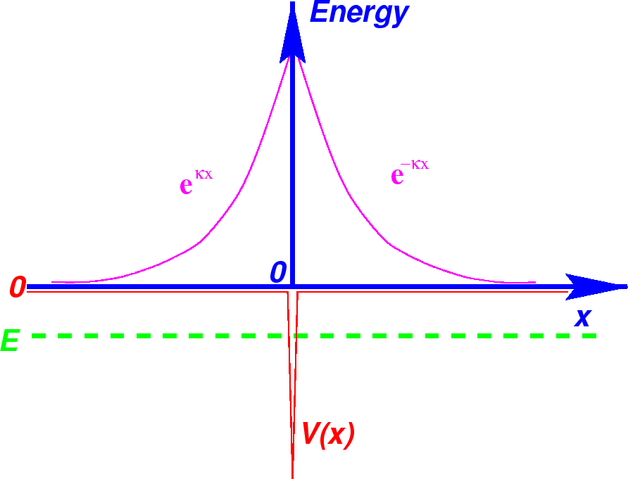
For point 2 of the boundary conditions, the derivative of the wavefunction would be discontinuous at \(x=0\) due to the delta potential (infinite potential). To impose the continuity of the derivative everywhere else, integrate SE around 0, i.e. in an infinitesimal interval \([−\epsilon,\epsilon]\) and then take the limit \(\epsilon \to 0\), obtaining a single allowed value of \(\kappa=\frac{m\alpha}{\hbar^2}\).
We can find \(A\) by imposing the normalization condition with the mod-square as usual, and find
\[ A = \sqrt{\kappa} = \frac{\sqrt{m\alpha}}{\hbar}, \]
so the delta-function well, regardless of the strength \(\alpha\), has exactly one (discrete) bound state given by the following wavefunction and eigenvalue:
\[ \psi(x)=\frac{\sqrt{m\alpha}}{\hbar}e^{-m\alpha |x|/\hbar^2}; \quad E=-\frac{m\alpha^2}{2\hbar^2}. \tag{4.14}\]
Demonstrate this as an exercise!
The wavefunction has tails even outside the “well”, where we would not expect to find the particle. This is the tunneling effect.
Note that there is no quantization of the allowed values for \(\kappa\), and therefore for \(E\): any given \(E\) has a valid stationary solution (valid for any \(\alpha\)).
The typical length \(\sim 1/\kappa\) to which the decaying exponentials “escape” the delta-function increases the smaller the energy deficit \(|V − E|\) for escaping the well: \(1/\kappa = \hbar/\sqrt{2m|E|}\). A finitely deep potential would break this continuous spectrum of energy eigenvalues by re-enabling the differentiability boundary condition… but of course there is no way to be both finitely deep and infinitely thin! Our next stop will, however, have aspects of both extreme solutions.
4.5 The finite square well
Let’s now imagine to start with the infinite well potential, but now lower the potential walls to a finite potential \(U_0\) which will represent the depth of the well.
The finite square well is a well of both finite width and depth, from which both the infinite-square and delta-function wells are asymptotic limits. As its potential’s geometry is still composed of piecewise-assembled flat elements, it is the simplest case where we get to synthesise the distinct oscillatory and evanescent solution types (i.e. complex and decaying exponentials) together.
The potential is given by the function
\[ U(x)= \begin{cases} -U_0 \quad \mathrm{for} ~-a\leq x\leq a,\\ 0 \quad \mathrm{for} ~|x|>a, \end{cases} \]
where \(U_0\) is a positive constant.
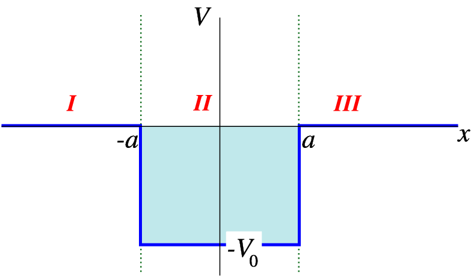
The bound states will be found for \(E<0\), inside the well, where the general solution is oscillatory. Outside the well, for \(E>0\), the solution will be exponentially decaying and we have scattering states.
4.5.1 Bound states
Let’s look at the bound states (\(E<0\)).
Outside the well, in the region \(x<-a\), the potential is 0, therefore the TISE can be rearranged in the form
\[ \frac{d^2\psi}{dx^2}=\kappa^2\psi, \tag{4.15}\]
where \(\kappa\equiv \sqrt{-2mE}/\hbar = \sqrt{2m|E|}/\hbar\) (real and positive).
Similarly to the case of the delta function, the general solution for this is \(\psi(x)=A_-e^{\kappa x}+B_-e^{-\kappa x}\), but the second term would blow up for \(x\to -\infty\), so just like for the delta-function:
\[ \psi(x)=A_-e^{\kappa x} \quad \mathrm{for} ~x<-a. \tag{4.16}\]
Due to the symmetry of the potential well, defined in the interval \([-a,a]\), we can find the solutions knowing that they have definite parity. It would in principle be sufficient to find the solutions for either positive or negative values of \(x\) and then use the parity condition.
For \(x>a\), using the parity operator or following the same argument also seen for the previous case of the delta potential, the solution is
\[ \psi(x)=A_+e^{-\kappa x}\quad \mathrm{for} ~x>a. \]
The coefficients B and F are determined by matching this wave smoothly by imposing the continuity conditions of the wavefunction and its derivative in space, inside the well.
The fact that \(\psi(x)\) is nonzero at the walls increases the de Broglie wavelength in the well with respect to the case of a particle in the infinite well potential, and this lowers the energy and momentum of the particle (increasing \(\Delta x \implies\) decreasing \(\Delta p\)).
Inside the well the energy \(E\) can’t be lower than \(-U_0\), so the energy must satisfy the condition \(-U_0\leq E <0\), and the TISE for \(|x|<a\) is
\[ \frac{d^2\psi}{dx^2}+\lambda^2\psi=0, \tag{4.17}\]
where \(\lambda = \sqrt{2m(U_0+E)}/\hbar = \sqrt{2m(U_0-|E|)}/\hbar\) and \(|E|=-E\) is the binding energy of the particle.
The solutions to Equation 4.17 include both even and odd oscillatory functions:
\[ \psi(x)=B\cos(\lambda x)+C\sin(\lambda x) \quad \mathrm{for} ~|x|>a \]
Putting these together, the solution for bound states, with \(E<0\), is
\[ \psi(x)= \begin{cases} A_- e^{\kappa x} \quad \mathrm{for} ~x<-a,\\ B\cos(\lambda x)+C\sin(\lambda x) \quad \mathrm{for} ~|x|>a,\\ A_+ e^{-\kappa x} \quad \mathrm{for} ~x>a. \end{cases} \]
We can use the symmetry however to find that \(A_-=A_+\equiv A\) because of the definite parity. This also implies that either \(B=0\) or \(C=0\).
We need to impose the BCs to find the coefficients, and specifically we need to impose the continuity of \(\psi\) and of \(d\psi/dx\).
Continuity:
- Even function:
\[ B\cos(\lambda a)=Ae^{-\kappa a}; \quad -\lambda B\sin(\lambda a)=-\kappa A e^{-\kappa a}, \]
and dividing the second equation above by the first:
\[ \tan(\lambda a)=\kappa/\lambda. \tag{4.18}\]
- Odd function:
\[ C\sin(\lambda a)=Ae^{-\kappa a}; \quad \lambda C\cos(\lambda a)=-\kappa A e^{-\kappa a}, \]
and again dividing the two equations:
\[ -\cot(\lambda a)=\kappa/\lambda. \tag{4.19}\]
The energy levels are found by solving the trascendental equations Equation 4.18 and Equation 4.19, either numerically or graphically, cause we can’t solve these analytically unfortunately.
It helps to visualise these functions and find graphically the solutions, corresponding to the points at the intersections of \(f(\lambda) = \kappa/\lambda\) with the even and odd transcendental functions \(g_\pm(\lambda) = \{\cos,\sin\}(\lambda a)\), as in Figure 4.7.
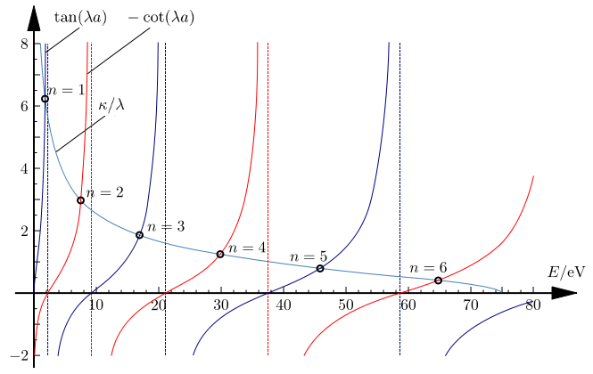
As expected for bound states, we obtain a set of discrete eigenvalues given by the quantum numbers in Figure 4.7, with alternating even and odd eigenfunctions - even for \(n=1,3,...\) and odd for \(n=2,4,...\).
The spacing between the intersections is also increasing with \(n\), just like in the infinite well potential, so the eigenvalues are not equally spaced.
It is also worth noting that in contrast with the infinite well potential, here we have a finite number of eigenvalues (e.g. 6 states represented in Figure 4.7 or 3 represented in Figure 4.8), but how many we have in general will depend on the strength of the potential. This is in contrast with the case of the infinite well potential where we had infinite discrete energy levels. In fact, there will be a finite \(n\) for which \(E>0\) and the state is no longer bound.
How does the number of eigenvalues change when we change the depth of the potential or the width?
You can normalize the wavefunction to find the values of the coefficients, but I will skip this here and consider instead what happens in two limit cases, where we make the well way deeper or where we make it very narrow.
Note that we could have defined the square well potential with a different zero of the energy, having zero potential inside the well and a finite potential \(U_0\) outside the well. The procedure and the eigenfunctions found are exactly the same, what would change in that case would be the energies in \(\lambda\) and \(\kappa\) to account for a shift of \(U_0\), i.e. we would have \(\lambda=\sqrt{2mE}/\hbar\) and \(\kappa=\sqrt{-2m(E-U_0)}/\hbar\).
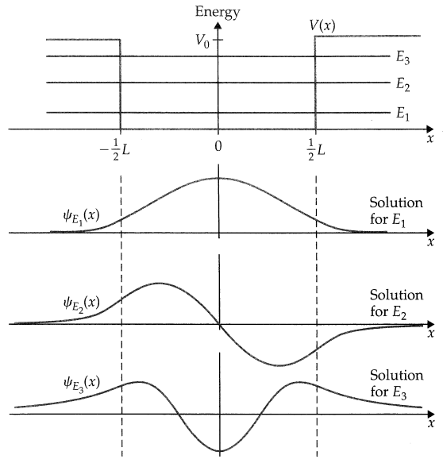
#### Deep well limit
With the above consideration, let’s conveniently shift the square well “up” so its outer walls are at a finite potential of \(U_0\) and the inside of the well has zero potential. This is convenient just because earlier we considered this convention in the infinite well potential, and in fact if we keep increasing the potential \(U_0\), in the limit \(U_0\to \infty\), the infinite well potential is exactly what we should obtain.
So let’s see what happens if we increase \(U_0\): \(\kappa\) will increase too with it, and will push the curve \(f(\lambda)\) upward uniformly, with two effects:
- increase in the number of eigenvalues (intersections with the \(g_\pm(\lambda)\) functions)
- the intersections move towards the asymptotic limits of the functions \(g_\pm(\lambda)\) (see straight lines in Figure 4.7), i.e. \(\lambda a = (n + 1/2)\pi\) or \(n\pi\) for the even and odd solutions respectively: you can verify that these correspond — as they should — to the half-wavelength solutions of the infinite square well.
Furthermore, the divergence of the \(f(\lambda)\) function for small \(\lambda\), while the \(g_+(\lambda)=\tan(\lambda a)\) function heads to zero, means there is always guaranteed to be at least one bound state, of \(\cos\)-type. The solutions hence have the same main features as seen in the infinite well: an even-symmetric ground state, excited states alternating in parity, and in the large-\(\lambda\) limit where \(f(\lambda)\) is nearly flat, quadratically increasing state energy \(E = (\hbar\lambda)^2/2m\).
#### Narrow potential limit
In the limit of infinitely narrow potential, i.e. \(a\to 0\), we have the delta-function potential seen in the previous section.
The decaying exponentials in the walls also exhibit the delta-potential feature that they penetrate further for high-energy states, eventually achieving boundless range as \(U_0 − E \to 0\), i.e. to freedom.
4.6 The harmonic well potential (quantum harmonic oscillator)
Many potentials could be approximated as harmonic oscillators by doing a Taylor expantion to the second order, around a minimum of the potentials. Quantum harmonic oscillators (QHO) are extremely useful in physics, and real vibrations can be indeed described with harmonic approximations.
The form of the potential for the harmonic oscillator is
\[ U(x)=\frac{1}{2}Kx^2 = \frac{1}{2}m\omega^2 x^2, \tag{4.20}\]
therefore the Hamiltonian and the corresponding TISE are, respectively:
\[ \hat{H}=[\hat{p}^2+(m\omega\hat{x})^2]/2m, \tag{4.21}\]
\[ -\frac{\hbar^2}{2m}\frac{d^2\psi}{dx^2}+\frac{1}{2}m\omega^2 x^2\psi=E\psi. \tag{4.22}\]
Solving this TISE with a differential equation approach in the wave formalism is a bit of a nightmare and I do not expect you to do it, not using this method at least! We can take a guess and see that due to the symmetry of the system we would expect a ground state that is symmetric around the centre of the potential and has no nodes. The simplest form for this would be a Gaussian, and in fact the ground state of the QHO is given by Equation 4.24, and the eigenfunctions, with \(n=0,1,2,...\) are in general given by Equation 4.25, while the eigenvalues are Equation 4.23.
This also seems an apt point to mention a general feature of all the bound-state wavefunctions we have studied: their ground state — \(n = 1\) for the infinite well, \(n = 0\) for the quantum (simple) harmonic oscillator (QHO) — always has a finite zero-point energy \(E_{ground} > 0\).
The zero-point energy comes from the Heisenberg’s uncertainty principle. In this case, imagine that your particle is exactly at the bottom of the well, so that the potential energy is 0. What would the implication be? If the position is very well defined, then the momentum must have a larger uncertainty, meaning that the kinetic energy would be higher and therefore the particle could not be still at the bottom of the harmonic potential! There is always going to be some energy even at the lowest possible state.
The Hermite polynomials alternate in parity and add more nodes to the wavefunction with every increment of \(n\).
It’s neat to note how this works, since usually differentiation is thought of as reducing polynomial orders, but here it seems to increase them. The trick is in the Gaussian and the product rule: each time a derivative is taken, the Gaussian term produces a new multiplying factor of \(−2x\), and hence raises the highest polynomial power by one. At the same time, the product rule requires that any already-existing polynomial terms be separately differentiated, which reduces their powers by one. The pre-multiplying inverse-Gaussian in Equation 4.26 is just there to remove the differentiation/multiplication-resilient Gaussian term; we then multiply the square-root of this back into place for our QHO solution.
The Hermite polynomials represent a “classic” orthogonal set, just like the Fourier terms that we have encountered in the finite square well. Another orthogonal set is given by the Legendre functions, which we will encounter when we deal with the angular momentum.
The eigenvalues and eigenfunctions are shown in Figure 4.9.

This is a good point to introduce the matrix formalism, i.e. the bra-ket notation, or Dirac notation that we mentioned at the beginning of the course, and solve the Schrödinger equation (Equation 4.22) using this. This formalism is also way more convenient to solve problems and exercises on the QHO (unless you really like doing integrals…), as we will see in an example at the end of the chapter. It’ll also be very useful to deal with angular momentum later on!
I will skip all the formalism to start with, and we’ll get to it in the following chapter.
Let’s just build some useful rules with a new notation.
4.6.1 An introduction to the Dirac notation
Let’s say that instead of using the notation \(\psi_n(x)\) to describe the eigenfunctions (using the wave formalism), we replace these with the notation \(|n\rangle\), where these are now vectors (called kets) indicating the states of Equation 4.25. Physically, we are not changing anything, only the way we decide to formalise them mathematically.
So now we have the ground state \(|0\rangle\) and the excited states \(|1\rangle, ~|2\rangle, ~...\) with energies given by Equation 4.23.
Let’s call these number states.
The Hermitian conjugate of a state \(|n\rangle\) is described by another vector (called bra) with the notation \(\langle n|\), such that \(\langle n|\equiv|n\rangle^{\dagger}\).
We can go up and down these states by providing or removing energy in multiples of \(\hbar\omega\). We have like a “ladder” of states, equally spaced (see Figure 4.10).
How about we introduce some operators to move across this ladder of states? Enter the ladder operators! These are obtained from linear combinations of \(\hat{x}\) and \(\hat{p}\), as follows.
The ladder operators are defined as: \[ \hat{a}_{\pm}\equiv \frac{1}{\sqrt{2\hbar m\omega}}(m\omega\hat{x}\mp i\hat{p}). \tag{4.27}\]
The position and momentum operator, in terms of the ladder operators, can be written as
\[ \hat{x} = \sqrt{\frac{\hbar}{2m\omega}}(\hat{a}_++\hat{a}_-); \quad \hat{p}=i\sqrt{\frac{\hbar m\omega}{2}}(\hat{a}_+-\hat{a}_-). \tag{4.28}\]
Note that \(\hat{a}_-^{\dagger}=\hat{a}_+\).
The ladder operators do not commute: \([\hat{a}_-,\hat{a}_+]=1\).
The ladder operators are not observables so they are not Hermitian operators and do not correspond to any physical measurable quantity.
Given a solution of the SE with energy \(E\), application of \(\hat{a}_\pm\) return a solution with energy \(E\pm \hbar\omega\), i.e. bring the state one level up or one down! However, since the lowest state is \(|0\rangle\), \(\hat{a}_-|0\rangle=0\).
In general: \[ \hat{a}_-|n\rangle=\sqrt{n}|n-1\rangle ; \quad \hat{a}_+|n\rangle=\sqrt{n+1}|n+1\rangle \tag{4.29}\]
Be careful when applying the operators on the bras! You need to consider the conjugate of both operator and state vector, so:
\[ \langle n|\hat{a}_- = (\hat{a}_+|n\rangle)^{\dagger} = \sqrt{n+1}\langle n+1|; \quad \langle n|\hat{a}_+ = (\hat{a}_-|n\rangle)^{\dagger} = \sqrt{n}\langle n-1|. \tag{4.30}\]
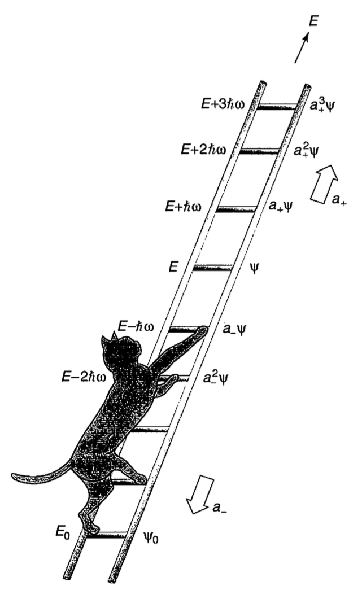
Using the ladder operators, the Hamiltonian of the QHO (Equation 4.21) can be rewritten as \[ \hat{H}=\hbar\omega(\hat{a}_+\hat{a}_-+\tfrac{1}{2}), \quad \hat{H}=\hbar\omega(\hat{a}_-\hat{a}_+-\tfrac{1}{2}) \tag{4.31}\]
It is therefore convenient to define the number operator \(\hat{n}\).
The number operator \[ \hat{n}=\hat{a}_+\hat{a}_- \tag{4.32}\]
returns the principal quantum number \(n\):
\[ \hat{n}|n\rangle=n|n\rangle. \tag{4.33}\]
This is an eigenvalue equation, and the number states \(|n\rangle\) constitute a complete orthonormal basis:
\[ \langle n|m\rangle =\delta_{nm}. \]
4.6.1.1 Exercise
Show Equation 4.31 starting from Equation 4.21.
Solution
Using Equation 4.27: \[ \begin{aligned} \hat{a}_- \hat{a}_+ &= \frac{1}{2\hbar m \omega} (i \hat{p} + m \omega \hat{x}) (-i \hat{p} + m \omega \hat{x})\\ &= \frac{1}{2\hbar m \omega} \left(\hat{p^2} + (m \omega \hat{x})^2 -i m \omega [\hat{x}, \hat{p}] \right)\\ &= \frac{1}{2\hbar m \omega} \left[\hat{p^2} + (m \omega \hat{x})^2\right] + \frac{1}{2}\\ &= \frac{1}{\hbar \omega} \hat{H} + \tfrac{1}{2} \end{aligned} \]
Rearranging this: \(\hat{H} = \hbar \omega \left( \hat{a}_- \hat{a}_+ - \tfrac{1}{2} \right)\).
Similarly
\[ \hat{a}_+ \hat{a}_-= \frac{1}{\hbar \omega} \hat{H} - \tfrac{1}{2} \implies \hat{H} = \hbar \omega \left( \hat{a}_+ \hat{a}_- + \tfrac{1}{2} \right). \]
4.6.2 Solving the harmonic oscillator
4.6.2.1 Ground state
We can find the ground state explicitly, knowing that \(\hat{a}_-|0\rangle =0\) and using the definition of \(\hat{a}\) in terms of \(\hat{p}\) and \(\hat{x}\) from Equation 4.27.
Moving back to the waves formalism:
\[ \hat{a}_-\psi_0 \propto (i\hat{p}_m\omega\hat{x})\psi_0=0\implies \frac{d\psi_0}{dx}=-\frac{m\omega}{\hbar}x\psi_0. \]
This has solution
\[ \psi_0(x) = \left( \frac{m \omega}{\pi \hbar} \right)^{1/4} \exp\left\{- \frac{m \omega}{2 \hbar} x^2 \right\}, \]
which is a normalised Gaussian.
We can verify the ground state energy from \(\hat{H}\psi_0\) with the Hamiltonian of Equation 4.31, using \(\hat{a}_-\psi=0\): \[ \hbar\omega(\hat{a}_+\hat{a}_-+\tfrac{1}{2})\psi_0=E_0\psi_0=\hbar\omega/2. \tag{4.34}\]
#### Excited states eigenenergies
In general, if we apply Equation 4.31 to the state \(|n\rangle\), we find
\[ \hbar\omega(\hat{n}+\tfrac{1}{2})|n\rangle=\hbar\omega(n+\tfrac{1}{2})|n \rangle = E_n |n\rangle \implies E_n = \hbar\omega(n+\tfrac{1}{2}). \tag{4.35}\]
4.6.2.2 Expectation values calculations
Typical exercises with QHO and other potentials in general require to calculate expectation values of various operators, e.g. of position, momentum, etc, on eigenstates or combinations thereof.
We saw that in the waves formalism the expectation value of an operator \(\hat{A}\) on a state \(\psi_n(x)\) is
\[ \langle \hat{A} \rangle = \int \psi_n^*(x)\hat{A} \psi_n(x) dx. \tag{4.36}\]
How do we calculate the equivalent with the Dirac notation? We use the Hermitian conjugate of the ket \(|n \rangle\), called a bra, \(\langle n|\equiv|n\rangle ^{\dagger}\).
So when we want to calculate an expectation value, we still have a sandwich in the bra-ket (now you know why they have these names), as follows:
\[ \langle \hat{A} \rangle = \langle n | \hat{A} | n\rangle. \tag{4.37}\]
Let’s consider a typical example with the QHO, both with the wave notation and the Dirac notation.
At the end of the chapter we’ll see more on the Dirac notation.
4.6.2.3 Exercise
Calculate \(\langle \hat{p}\rangle\) on the ground state of the QHO, using two methods:
- Using \(\psi_0\) as in Equation 4.24 and the wave formalism
- Using the Dirac notation with the state \(|0\rangle\).
Solution
- Let’s use Equation 4.24 and the formula for the expectation values Equation 4.36, with \(\hat{p}=-i\hbar \tfrac{d}{dx}\):
\[ \begin{aligned} \langle \hat{p} \rangle &= \int_{-\infty}^{\infty} dx \psi_0^*\hat{p}\psi_0\\ &=\sqrt{\frac{m\omega}{\pi\hbar}}\int_{-\infty}^{\infty} dx i\hbar\frac{m\omega}{\hbar}x\exp\left\{-\frac{m\omega}{\hbar}x^2\right\}=0 \end{aligned}, \]
where we can say that it is \(0\) because of the parity of the function: it is odd, so the integrals in the positive and negative coordinates cancel each other.
This method requires more familiarity with evaluation of derivatives and integrals. Let’s look at the second method.
- Let’s use \(\hat{p}\) as defined in Equation 4.28, evaluated on the state \(|0\rangle\):
\[ \begin{aligned} \langle \hat{p}\rangle &\propto \langle 0 |(\hat{a}_+-\hat{a}_-)|0\rangle = \langle 0|\hat{a}_+|0\rangle - \langle 0|\hat{a}_- |0 \rangle\\ &\propto \langle 1|0\rangle -0=0. \end{aligned} \]
This method requires to know (check formula sheet) how the ladder operators act on number states, and to use the fact that these are orthonormal. Easy peasy!
4.7 Rules for wavefunctions in general potentials
The nature of QM is that once we go beyond these simple potentials it rapidly becomes impossible to calculate analytic solutions: we already saw this for even a case as simple as the finite square well. It’s a nice example of Rutherford’s comment that “All of physics is either impossible or trivial.”. Rutherford went on to say that “It is impossible until you understand it, and then it becomes trivial,”, so in that spirit this section is dedicated to showing you that even if a solution cannot be calculated in the nice closed form we’re used to, and we have to resort to numerical computation instead if we want accurate numbers, it is very possible — trivial, Rutherford would say — to understand why they look the way they do.
The arguments we will use are based on out existing set of boundary and integrability conditions, plus features given by the TISE (Equation 3.23):
A stationary wavefunction \(\psi(x)\) must always be continuous, i.e. no sudden jumps in amplitude across differentially small distances dx.
It must also be differentiable, i.e. smooth, except at infinite-sized potential steps: for those a kink is permitted.
All wavefunctions must go to zero at infinite distance, for integrability: as bound states are defined to have \(E < V\) at infinity, this means that the wavefunction must go to zero in classically forbidden regions.
Any general potential can be built by concatenating flat-potential wavefunctions for each flat region, and matching them via the boundary conditions. You can think of general potentials as a stack of thin square potentials: same rules apply, i.e. continuous and smooth wavefunctions. Every wavefunction is locally a real or complex exponential, connected to the next piece via BCs.
This is the essence of the WKB approximation technique - but for sketching purposes you can imagine a roughly equivalent piecewise-flat potential and fudge the smoothing of the steps.
- The TISE can be written in the form: \(\frac{d^2\psi}{dx^2} \Big/ \psi = - \frac{2m}{\hbar^2}(E-U) \implies\) curvature is toward the \(x\)-axis, i.e. toward \(\psi=0\), in classically allowed regions \(E-U>0\), away from it in forbidden ones, i.e. away from the \(\psi=0\) axis in disallowed regions.
For a fixed \(E-U\), the degree of curvature is proportional to the value of \(\psi\): a large amplitude will be highly curved, e.g. the curvature of the cos function has its maximum value where the cosine is largest.
- The wavefunction is oscillatory where net positive kinetic energy \(E - U\); evanescent/exponential where negative.
In a region of \(x\) with a flat potential, \(U(x) =\) const, the solution will be wavelike and oscillatory if \(E > U\), i.e. it is classically allowed, and an exponential in classically forbidden regions with \(E < U\). Rule 3 forces these exponentials to decay at the edges of the potential toward \(\pm\infty\).
- The typical inverse scale of both the oscillating and decaying solutions — respectively the wavenumber and the decay constant — becomes larger as the magnitude of excess or deficient energy with respect to the potential increases.
Curvature/frequency scale with energy difference: \(-\frac{\hbar^2}{2m} \frac{d^2{\psi}}dx^2 \to \frac{\hbar^2 k^2}{2m}= (E-U)\), with \(\sim 1/k\) as more kinetic energy \(E − U\) in allowed regions leads to larger wavenumbers and hence smaller wavelengths; a greater energy deficit \(U − E\) in forbidden regions gives a more rapidly decaying exponential.
Amplitude is smaller where KE is larger (more velocity, less likely to be found there) Counterintuitively, in allowed regions the envelope of the wavefunction will be smaller where the kinetic energy \(E − U\) is larger: intuitively, where the particle has more velocity, it spends less of its time and is less likely to be found.
Principal quantum number \(n = 1,\dots \implies n\) bumps or \(n-1\) nodes._ Solutions always come in a perhaps finite stack indexed by the principle quantum number \(n\). The ground state, with lowest \(n\), always has zero nodes (\(\psi = 0\) points); each higher state adds one node. Alternatively, the ground state only has one “bump”; the higher states add a bump for each unit increase in \(n\).
Remember definite parity for symmetric potentials.
If the potential has even symmetry, the stationary solutions will have definite parity, i.e. they will be exactly odd or even functions. If the potential doesn’t have even symmetry, the definite-energy wavefunctions will generally be asymmetric.
With these rules in hand, you should be able to render an acceptable guess of how the nth energy level of stationary wavefunction should look in any potential: some examples are given in Figure 4.11 and Figure 4.12.
Below is (embedded) a document that goes more in detail and can be useful for sketching wavefunctions. A summary is reported below anyway. (If you are reading this from a non-html format, you can find the file on Moodle or at this link.)
4.7.1 Examples of general potentials
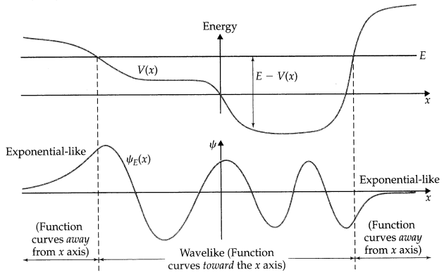
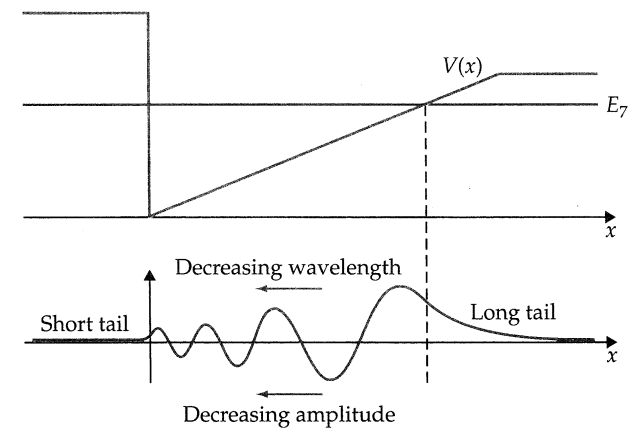
4.7.2 Periodic boundary conditions
In some cases, for instance for particles in a ring, it is possible to not have any boundary conditions that fix wavefunction value at a certain place.
In such cases require equal value and derivative in \(\varphi \to \varphi + 2\pi\) round the ring.
For a flat \(V(\varphi)\), the solution is a plane wave \(\psi(\varphi)\sim e^{im\varphi}=e^{im(\varphi+2\pi)}\).
Require \(e^{2\pi im} = 1 \implies\) integer \(m\). This means that we must fit the whole wavelengths around the ring (as in Figure 4.13), and this is what we have seen for the Bohr atom and what we will see for the spherical harmonics.
The BC is now geometry rather than potential.
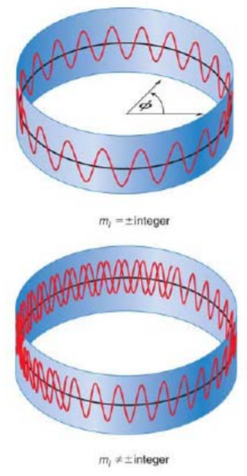
4.8 More on the Dirac notation
At the beginning of the course we saw that there are two equivalent formalisms to describe quantum mechanics: wave formalism and matrix formalism.
Until the QHO, we have used the former, which uses wavefunctions dependent on spatial coordinates (or coordinates in momentum space), and where operators are determined by functions acting on the wavefunctions.
With the matrix formalism however, we have states described by row and column vectors (respectively “bra” and “ket”) and operators described by matrices acting on the states.
In the Dirac notation, every wavefunction can be written in the form of a state vector \(|\Psi\rangle\) in a given basis (e.g. position or momentum).
4.8.1 Bra, ket and operators
Kets are column vectors:
\[ |x\rangle = \begin{pmatrix} x_1\\ x_2\\ x_3 \\... \end{pmatrix}, \]
where \(x_i\) are the components of the vector.
Bras are row vectors and the Hermitian conjugate of ket-vectors (i.e. transpose the vector and take the complex conjugates of its elements):
\[ \langle x|= (x_1^* ~~ x_2^* ~~ x_3^* ~~...) = |x\rangle^{\dagger}. \]
The dagger (\(\dagger\)) indicates the Hermitian conjugate.
Operators are represented by matrices, of the form
\[ \hat{A} = \begin{pmatrix} A_{11} & A_{12} & A_{13} & ...\\ A_{21} & A_{22} & A_{23} & ...\\ A_{31} & A_{32} & A_{33} & ...\\ ... & ... & ... & ... \end{pmatrix} \]
So now you understand why earlier on we said that an operator \(\hat{A}^{\dagger}\) is defined as the conjugate transpose of \(\hat{A}\): you need to consider the complex conjugate and transpose the matrix.
4.8.2 Inner and outer product
The inner product between ket and bra vectors returns a scalar (i.e. a number):
\[ \langle \psi|\phi\rangle=(\psi_1^* ~~ \psi_2^* ~~ \psi_3^* ~~ ...)\begin{pmatrix} \phi_1\\ \phi_2\\ \phi_3 \\... \end{pmatrix} = \sum_i \psi_i \phi_i^* \tag{4.39}\]
The outer product gives a matrix: \[ |\psi\rangle\langle\phi|=\begin{pmatrix} \psi_1\\ \psi_2\\ \psi_3 \\... \end{pmatrix}(\phi_1^* ~~ \phi_2^* ~~ \phi_3^* ~~ ...) = \begin{pmatrix} \psi_1\phi_1^* & \psi_1\phi_2^* & \psi_1\phi_3^* & ...\\ \psi_2\phi_1^* & \psi_2\phi_2^* & \psi_2\phi_3^* & ...\\ \psi_3\phi_1^* & \psi_3\phi_2^* & \psi_3\phi_3^* & ...\\ ... & ... & ... &\dots \end{pmatrix} \tag{4.40}\]
4.8.3 Mapping to waves formalism
We can use these ingredients to see how we can go from waves to matrix formalism and viceversa.
4.8.3.1 Eigenstates as a basis
The linear superposition of wavefunctions seen earlier can be applied also to the vector notation with kets or bras: \[ |\Psi\rangle = \sum_i c_i |\phi_i\rangle, \tag{4.41}\]
where \(\{\phi_i\}\) are eigenstates of a Hermitian operator, forming a complete, orthonormal basis, and \(c_i\) are the amplitudes.
A composite state no longer satisfies the eigenvalue equation Equation 4.38:
\[ \begin{aligned} \hat{A}|\Psi\rangle &= \sum_i c_i \hat{A}|\phi_i\rangle=\sum c_i a_i|\phi_i\rangle\\ &\neq a \sum_i c_i |\phi_i\rangle = a |\Psi\rangle. \end{aligned} \]
States built from non-degenerate eigenstates do not have definite quantum numbers!
When we consider a wavefunction \(\psi(x)\), this is defined in the position space, so we have to use the \(x\) basis to write it. How do we give this information in the Dirac notation? We need to use the basis \(\{|{x}\rangle\}\), i.e. a set of quantum states, one for each \(x\), satisfying the identity operator in Equation 4.42. The same could be done for the \(p\) (momentum) basis.
For position and momentum basis, the identity operators can be defined as \[ \hat{I} = \int dx |x\rangle\langle x| = \int dp |p\rangle \langle p|. \tag{4.42}\]
In general, for any complete orthonormal basis with vectors \(\{|\phi_i\rangle\}\) (with \(i\) integer numbers),
\[ \hat{I} = \sum_i |\phi_i\rangle \langle \phi_i|. \]
In the basis of position eigenfunctions we can then define
\[ |\psi\rangle = \hat{I}|\psi\rangle = \int dx |x\rangle\langle x|\psi\rangle=\int dx \psi(x)|x\rangle, \]
where \[ \psi(x) = \langle x|\psi\rangle. \tag{4.43}\]
4.8.3.2 Orthogonality of eigenstates
The overlap between two states is given by the inner product
\[ \langle \psi|\phi\rangle=\int dx \psi^*(x)\phi(x). \tag{4.44}\]
States of an orthonormal basis \(\{|\phi_i\rangle\}\) satisfy the following properties:
\[ \langle\phi_n|\phi_k\rangle = \int\phi^*_n\phi_kdx=\delta_{nk}, \]
so the inner product of a wavefunction with itself is its normalization:
\[ \langle\psi|\psi\rangle=\int|\psi(x)|^2 dx =1 \]
4.8.3.3 Eigenstates probabilities
Given a state \(|\Psi\rangle\) written as superposition of eigenstates (Equation 4.41), the inner product with itself is
\[ \begin{aligned} \langle \Psi | \Psi \rangle &= \langle \sum_i c_i \phi_i | \sum_j c_j \phi_j\rangle =\sum_{i,j} c_i^* c_j\langle \phi_i|\phi_j\rangle = \sum_{i,j} c_i^* c_j \delta_{i,j}\\ & \sum_i |c_i|^2 = 1. \end{aligned} \tag{4.45}\]
This follows from the normalization condition. The modulus square of the amplitude \(c_i\) indicates the probability \(P_i=|c_i|^2\) of finding the composite state in the \(i\) eigenstate component.
4.8.3.4 Expectation values
Remember the sandwich!
\[ \begin{aligned} \langle \hat{A} \rangle &= \int \Psi^*(x) A\Psi(x)dx\\ &=\langle \Psi|\hat{A}|\Psi\rangle = \sum_i |c_i|^2 a_i = \sum P_i a_i, \end{aligned} \tag{4.46}\]
where we used Equation 4.45 in the last passages.
What does this result mean physically?
The expectation value is the probability-weighted average of eigenvalues. This is in line with the correspondence principle!
4.8.3.5 Individual measurements
What happens in repeated measuremnts of a single system?
Let’s suppose that I have a single system with wavefunction \(\Psi\) and do a measurement of \(\hat{A}\) on it.
The measurement collapses the wavefunction to one of the eigenstates, i.e. \(\Psi \to \phi_i\) with probability \(P_i=|c_i|^2\), returning the quantum number \(a_i\).
What happens if I repeat the measuremnt on the same system after the first one?
The system will keep being \(\Psi=\phi_i\) with \(P_i=1\), so any consecutive measurement will return \(a_i\).
To repeat the process we can apply a different operator with a different eigen-basis \(\{ \varphi_i \}\) repeats the process, via the decomposition \(\phi_i = \sum_j \langle\phi_i|\varphi_j\rangle |\varphi_j\rangle\).
The “projected probability amplitude” applies between any two wavefunctions \(\psi\) and \(\psi'\), e.g. due to sudden changes of potential function: \(c = \sqrt{P} = \langle\psi|\psi'\rangle\).
4.8.4 Exercise
From Equation 4.41, show that the amplitudes \(c_i\) can be written as \(c_i = \langle \phi_i | \Psi\rangle\).
Use the orthonormality of the eigenstates \(\psi_i\).
Solution
Starting from \(\Psi = \sum_j c_j \phi_j\), let’s calculate the overlap with \(\psi_i\):
\[ \langle \phi_i| \Psi\rangle = \sum_j c_j \langle \phi_i|\phi_j\rangle = c_i, \]
where we used the orthonormality condition \(\langle \phi_i| \phi_j\rangle =\delta_{ij}\).
4.9 Summary
- Potentials deeper than the energy of a state, \(E\), localize it spatially to various degrees: a bound state
- Bound states can be described by the TISE, i.e. invariant spatial eigenfunctions with stationary-state time-evolution
- The form of the potential determines the form of the quantization through boundary conditions: eigenstates from continuous (free particle) \(\to\) discrete for any non-trivial potential
- General solution is (as always) a linear combination of orthogonal eigenstates… even energy doesn’t have to be definite!
- For finite potentials (and delta…),wavefunction tunnels into classically forbidden regions… but zero flux.
- The Dirac notation uses the matrix formalism of QM and can be useful to avoid derivatives and integrals, i.e. in the QHO calculations.